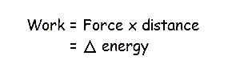
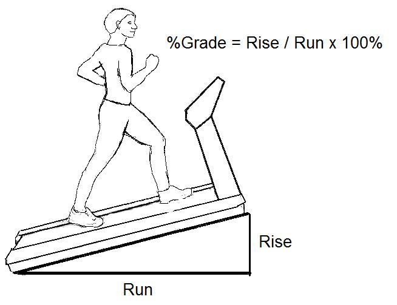
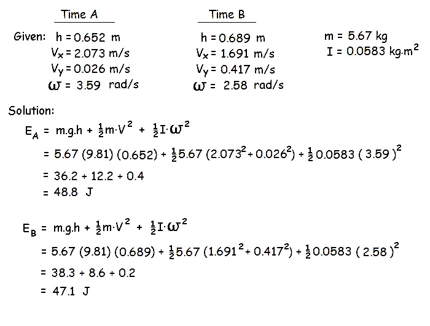

Work-Energy Balance
Muscular contraction involves the conversion of metabolic energy (via caloric expenditure) into mechanical energy so that mechanical work can be performed. In the previous lecture, we defined several types of mechanical energy and broadly defined energy as the ability to perform work. This lecture defines work and shows the balance between work and energy.
Work can be defined as the product of force and distance and it is equal to a change in energy.

Positive work occurs when the force and motion are in the same direction. Negative work is done when they are in opposite directions. Lifting a weight is an example of positive work and lowering a weight is an example of negative work. When positive work is performed, energy increases. When negative work is performed, energy is decreased.
Example:

A runner must perform extra work when running up a hill compared to running on level ground because the runner's potential energy increases. Calculate the extra work by an 80 kg runner on a treadmill set at a 10% grade who runs at a speed of 6 km/hr for 30 minutes.
Solution:
A 10% grade means that the slope is such that for every 100 m of horizontal displacement, the vertical displacement is 10 m. The angle of the incline is Ø = tan-1(rise/run) = tan-1(0.10) = 5.71 degrees.
Since the runner has a speed of 6 km/hr and a time of one half hour, he runs for 3000 m (6000 m x 0.5 = 3000). The hypotenuse of the triangle is 3000m and the angle is 5.71 degrees. Therefore, the rise = 3000 sin5.71o = 298.5m.
The potential energy gained is m.g.h = 80(9.81)(298.5) = 234kJ.
Work Performed on a Human Body Segment:
We can calculate how much work is done on a human body segment by calculating the change in the segment's energy. In the example below, we look at the energy of a thigh segment during a walking stride at two points in time.

The energy of the thigh segment has changed from 48.8 J to 47.1 J which means that work has been performed on the segment. The amount of work is equal to the change in energy. Work = 47.1 - 48.8 = - 1.7 J
Therefore 1.7 J of negative work was performed on the thigh segment.
Notice, also that the potential energy increased from 36.2 J to 38.3 J while the kinetic energy was reduced from 12.6 J (12.2+0.4) to 8.8 J (8.6+0.2). There has been a transfer of energy within the segment from kinetic to potential much like the energy conservation of a pendulum. Some of the lost kinetic energy has been used to increase the potential energy but 1.7 J of negative work was still required to reduce the kinetic energy further. On the next page we will see that energy can not only be transfered within a segment but also between segments.